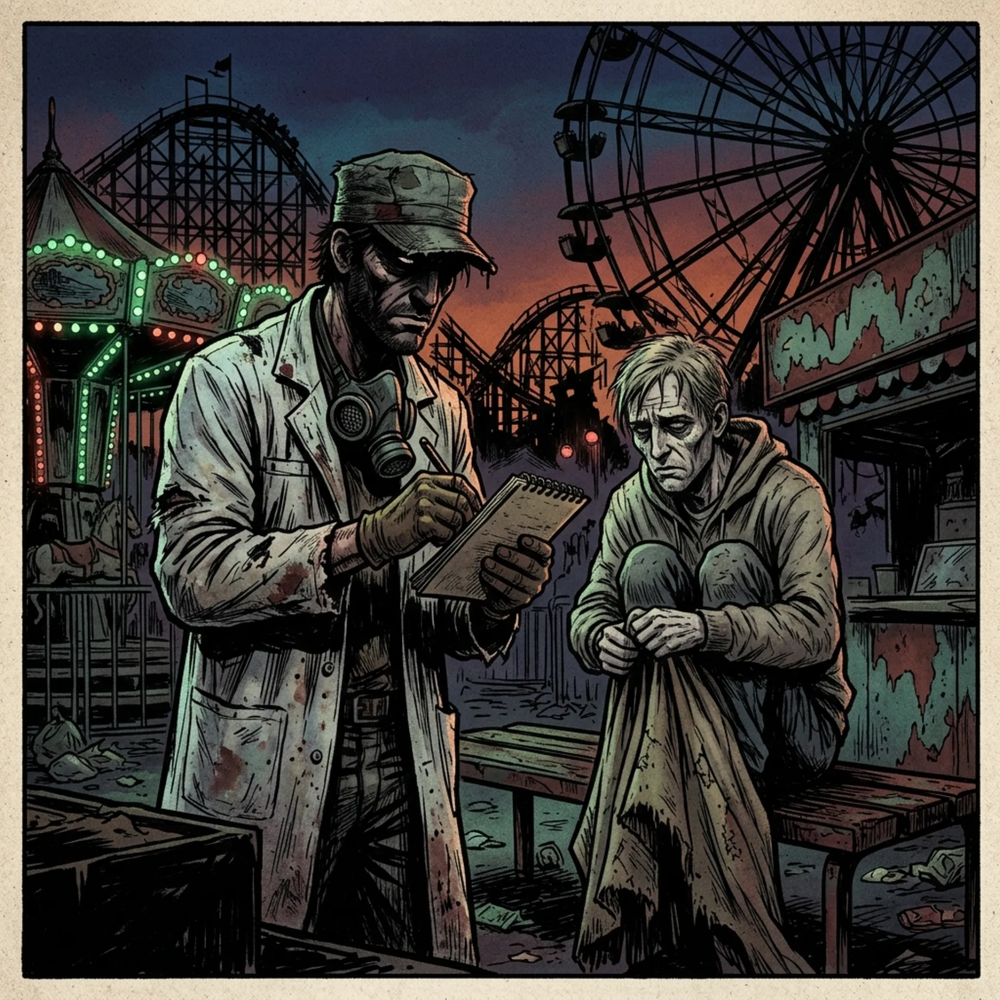
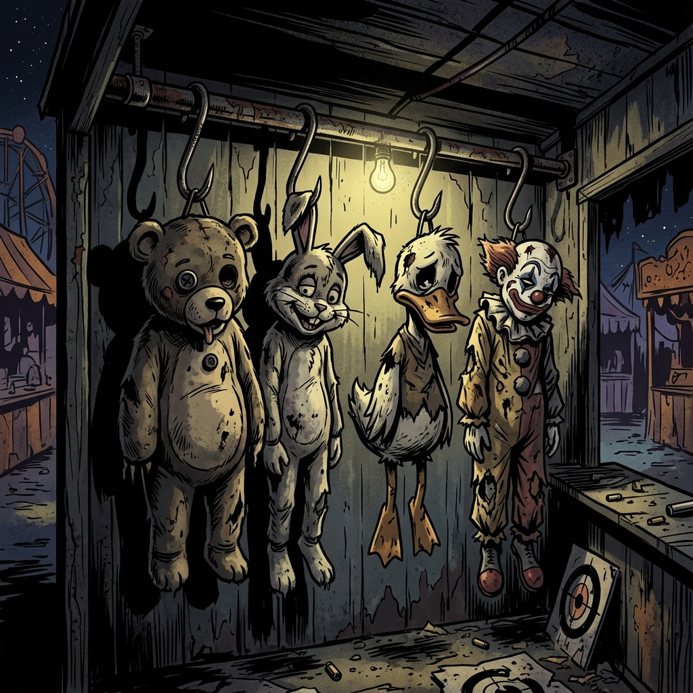
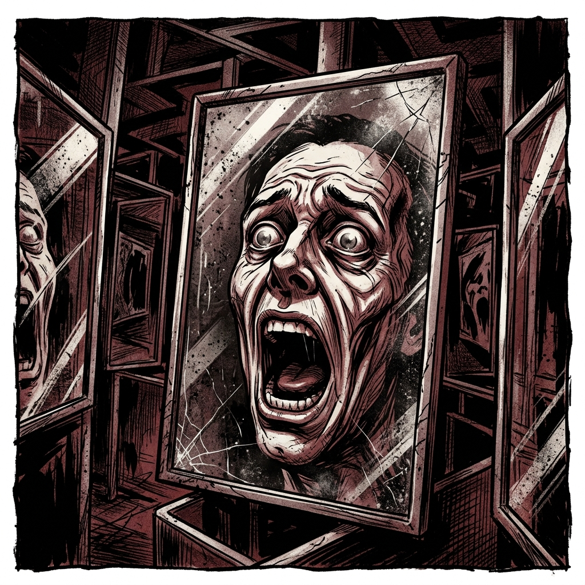

Патрулирование (Белые халаты)
Ваша задача — визуальный осмотр контингента. Ищите гостей с признаками так называемого «укачивания» (первичная реакция на выброс гормона ностальгии). Фиксируйте их данные в блокноты. Не вступайте в диалог.
Этот адрес зарезервирован для персонала. Вернитесь к гостевой странице парка.
Открыть «Солнышко»Объект «Солнышко» функционирует как открытый полигон для выявления наиболее перспективного сырья перед отправкой на Фабрику Сладостей. Громкие звуки, вращение и сахарная вата стимулируют выработку необходимых липидов.



Ваша задача — визуальный осмотр контингента. Ищите гостей с признаками так называемого «укачивания» (первичная реакция на выброс гормона ностальгии). Фиксируйте их данные в блокноты. Не вступайте в диалог.
Аниматоры (Уровень 1), исчерпавшие свой ресурс или начавшие проявлять остаточное самосознание, подлежат подвешиванию на крюки в тире «Меткий Стрелок». Отдавайте их гостям в качестве призов. Возврату эти туши не подлежат.
Зеркальный лабиринт оснащен дисторшн-оптикой, которая ломает зрительное восприятие и вызывает финальный слом психики гостя. Выход блокируется до тех пор, пока субъект не перестанет кричать и не начнет улыбаться.
Сегодня праздник. Если на Карусели кто-то из аниматоров начнет просить о помощи — игнорируйте. Мы славим Солнце. Тишина — залог качественного экстракта 312.